冒著大風雨從酒店步行往龍頭岩, 走了一半路程的時候, 風勢愈來愈強勁, 鞋子和褲子都濕透, 她決定放棄, 先返回酒店, 由我獨自繼續走往龍頭岩。我沿途不時找地方避風雨, 走走停停, 來到一個名為漢斗起村 (한두기) 的海岸, 這裡的風勢明顯更加猛烈, 雨傘也接連的給吹翻。看見海堤的另一邊有一個村莊, 估計那裡應該有地方可以避雨, 便萬分狼狽的匆匆走過馬路。

匆匆走過馬路, 拐過海走, 來到海邊的漢斗起村。
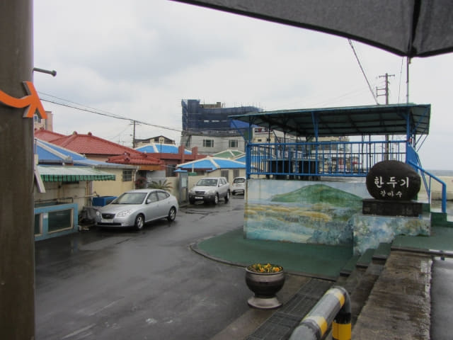
很幸運找一個可以避雨的地方, 看來是一間餐廳的帳篷。在這裡歇了一會, 繼續前進。
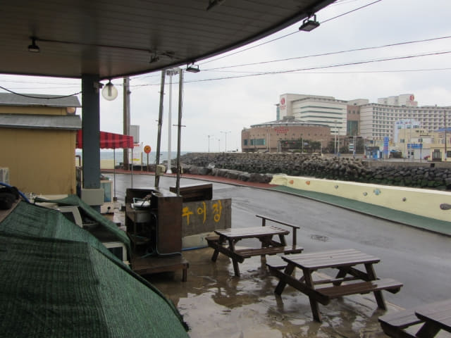
從一個帳篷走到另一個帳篷, 唯有盡量利用這方法向前移動。這時褲子和鞋子都濕透, 雨勢一直都沒有放緩, 強烈海風從四周打來, 正當想放棄之際, 看見遠處的岬角, 估計那裡便是龍頭岩了, 又再鼓起勇氣繼續向前走。
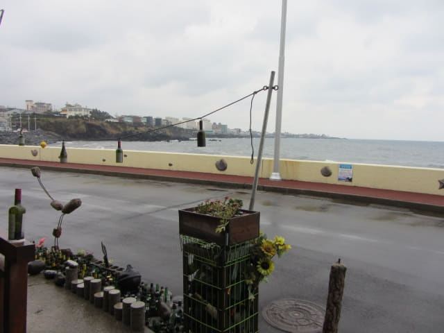
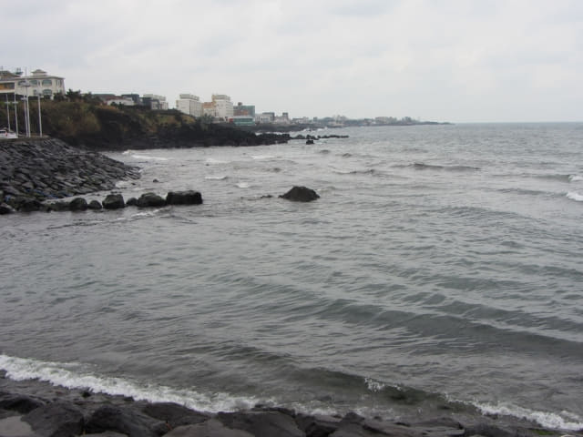
龍淵雲橋 (용연구름다리)
沿狂風的海岸走了一會, 來到一條河流(龍淵)的海港出口處。放眼遠望, 一道優美吊橋橫躺河流兩岸, 應該是龍淵雲橋了!
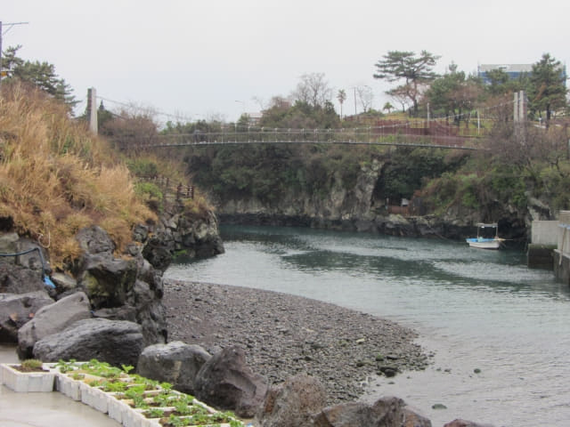
繼續沿龍淵畔的步道走。這道路非常陡斜和濕滑, 真是要十分小心!
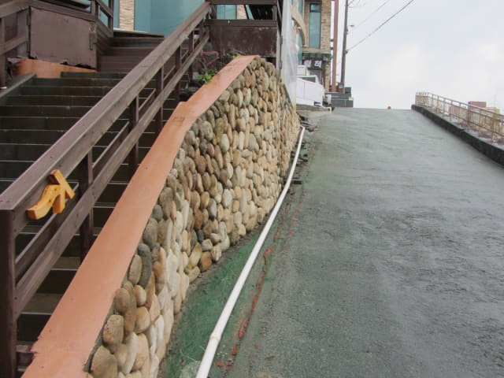
小心翼翼的走上濕滑的坡道, 龍淵雲橋就展現眼前。這麼惡劣的天氣, 唯一的好處是沒有其他旅客。
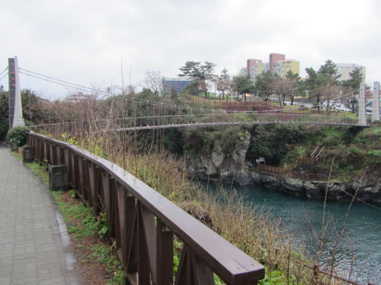
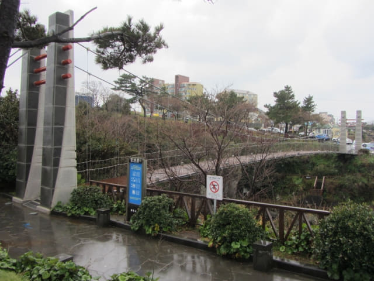
龍淵雲橋旁的龍淵亭。雨傘不斷的給強風吹翻, 單拍這張照片已花了不少時間, 令人十分氣餒的!
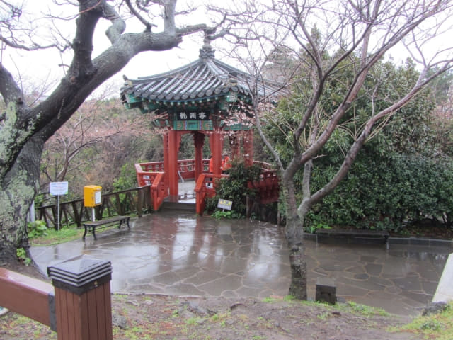
撐著雨傘, 彎腰低頭的走過龍淵雲橋。
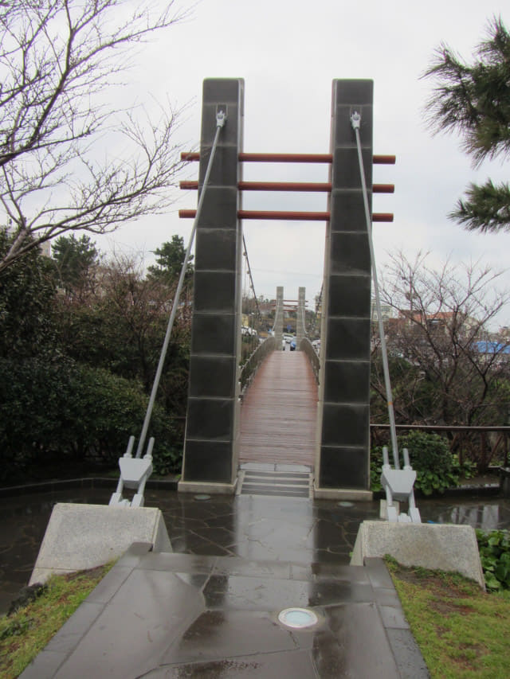
龍潭公園 (용담공원)
來到淵雲橋對岸的龍潭公園, 再往前走不到十分鐘便是龍頭岩了! 但這時狂風大作, 雨不斷的打在身上, 全身都濕透了! 看見左邊的公園內有一個展望台, 便匆匆走到那裡, 打算拍攝淵雲橋和對岸的龍淵亭, 但強風不斷吹翻雨傘, 好像想將我揪上天空的。最後勉強把握到一個機會, 僅拍攝到淵雲橋的風景, 只可惜沒有給我多半秒的時間移動鏡頭到龍淵亭。
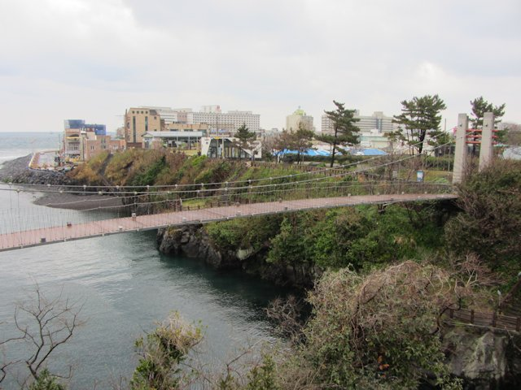
看見展望台後面有一個有上蓋的休憩地方, 便匆匆走往那裡避雨。在龍潭公園的休憩所下等了一會, 風勢實在太大, 根本沒可能走到海邊的龍頭岩, 那裡的情況簡直不敢想像, 或者…….可能因天氣惡劣已經禁止進入 (其實當時我最希望是這結果)。恐怕有危險, 最後決定放棄繼續走到龍頭岩, 到此為止算了, 往後還有更重要的旅程。在這麼惡劣的天氣下, 來到這裡算是有交代了!
循展望台離開。但當看見淵雲橋和對岸的龍淵亭, 又忍不住停下來, 希望可以拍攝到更佳的照片。強風把我吹得左搖右擺, 雨傘稍為張開少許, 便立即吹翻。對岸龍淵亭上有兩位工作人員, 原本坐在亭中的, 當看見我站在展望台, 可能恐怕我有危險, 馬上彈起來, 留意我的一舉一動。最後非常困難地才拍攝到以下兩張照片, 代價是弄濕了相機、一身濕透和被強風吹得不似人形。
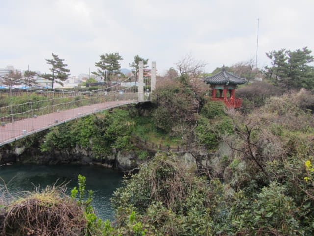
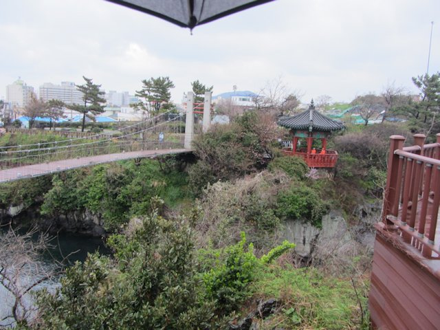